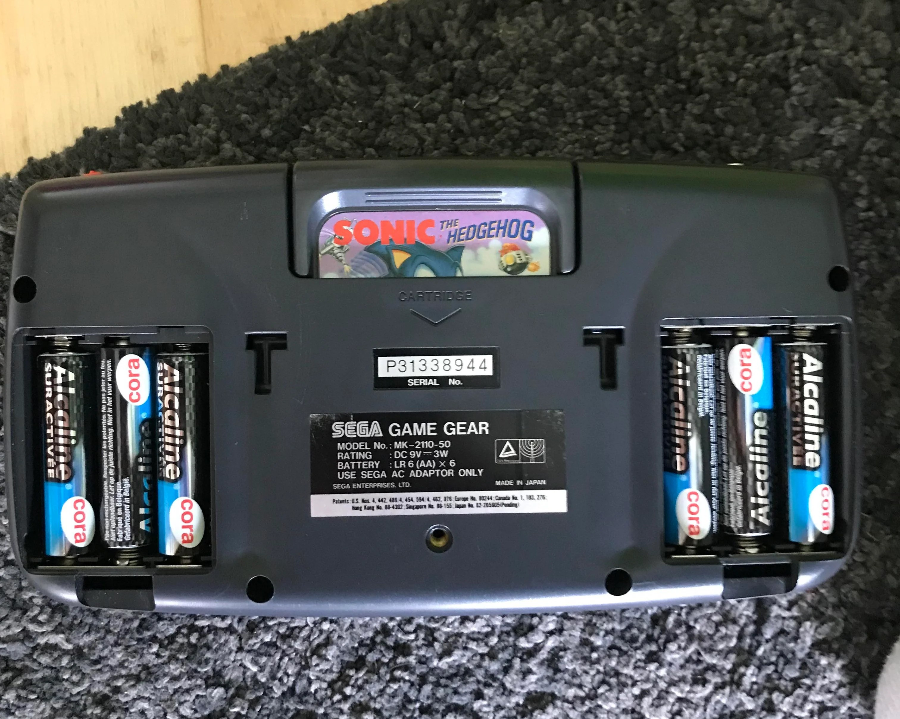
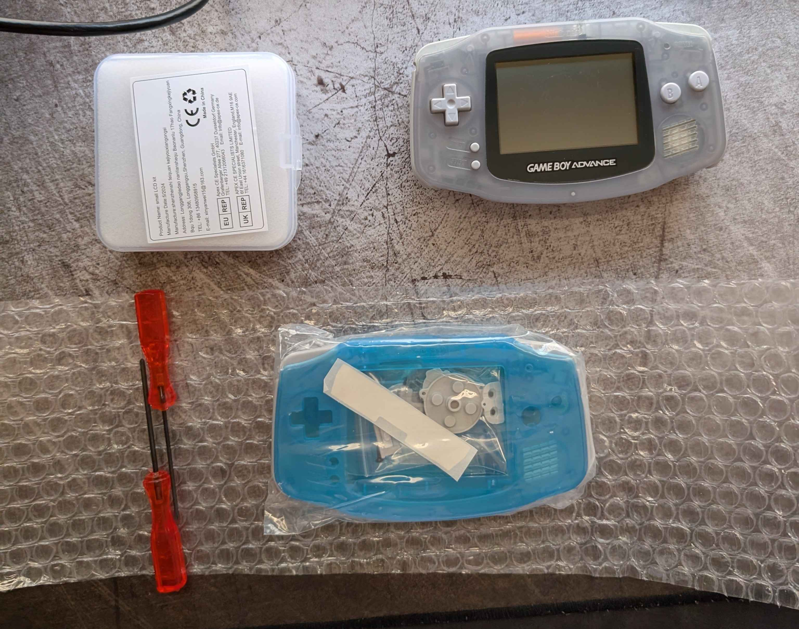
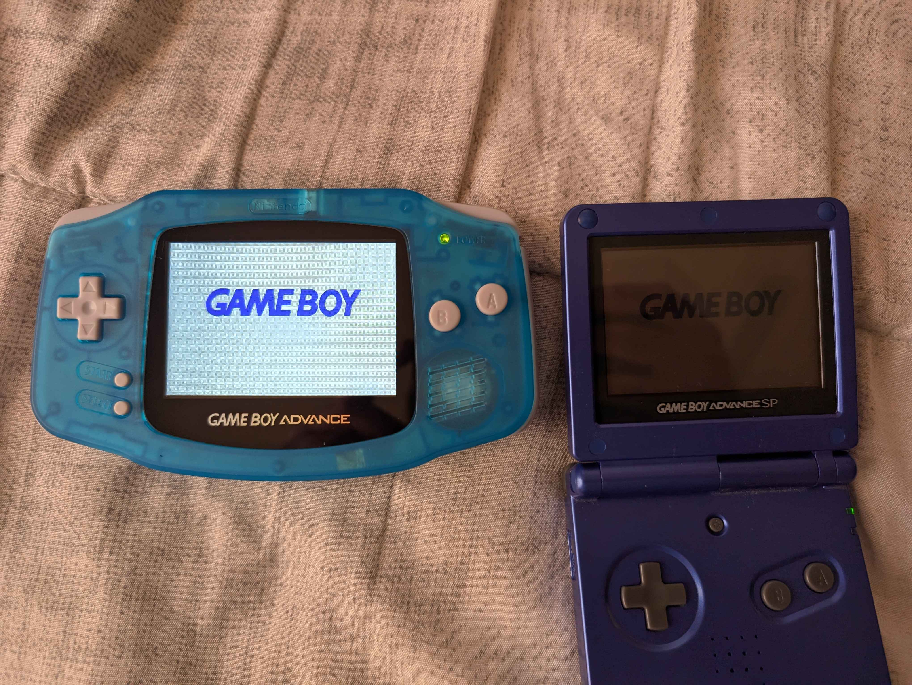

One of the items that has been on my bucket list for the longest time is modding a Gameboy's display. For those unaware, the Gameboy Color (GBC), and Gameboy Advance (GBA) had "Reflective Thin-Film Transistor (TFT) liquid crystal displays (LCDs)" with no backlight. This means that - although the display looked great under sunlight - if you tried playing in a moderately dark room, you were S.O.L. The absence of a backlight was a limitation created by the early display technologies available throughout the 90s. Although there are retro consoles that featured colored, backlit displays - such as the Atari Lynx (1989), Sega Game Gear (1990), and Sega Nomad (1995) - these handhelds were notorious for being battery hogs. The Game Gear infamously required six AA batteries for operation, all for a whopping 3-5 hours of battery life 😭. By contrast, the GBC and GBA only required two AA batteries and could last up to 10 hours!
 Image obtained from Reddit. Posted in r/game_gear by u/Emotional-Guitar785
Consoles that launched in the early 2000s, such as the Gameboy Advance SP (AGS-101 model), Nintendo DS, and Playstation Portable (PSP), all had good backlit displays that put the early Gameboy screens to shame.
Luckily, display technology has gotten much cheaper and way more efficient, to the point that people have begun modifying their retro consoles so they can provide more competent, modern experiences.
This leads us to the whole point of the blog - I was finally able to do a Gameboy Advance screen mod.
The bill of materials for this project can be found in the table below.
The whole project was very expensive, and this can be attributed to the recent resurgence of the Gameboy Advance in popular media.
YouTube videos showcasing how to upgrade the GBA's display now have millions of views, and many sellers on sites like Etsy and eBay are selling custom modded GBAs for super high prices.
Performing the upgrade on your own can save you a lot of money.
The main drawbacks are the shipping speed and availability of the kits, the need to cut/modify original shells for compatiblity, and the amount of time it takes to do the modifications.
The eBay seller that I purchased the display and shell from was Chinese, so the package took approximately two and a half weeks to get to me.
| Item | Marketplace | Price |
|---|---|---|
| Used Gameboy Advance - Glacier | Facebook Marketplace | $50 |
| GBA V2 IPS Backlight LCD Mod | eBay | $39.96 |
| Nightlight Blue GBA Pre-Cut Housing Shell | eBay | $4.45 |
| Total: | $94.41 | |
The display kit that I purchased came with the new IPS display, a glass GBA display lens, a PCB adapter for the new display (with two pre-soldered touch sensors to switch between brightness levels and filters), ribbon cables to connect the PCB to the GBA's motherboard, acrylic spacers, insulation film, and a few wires for (optional) soldering. The shell kit that I received came with a glow-in-the-dark transparent blue shell, grey buttons, side bumbers, and membranes, new (but not very good 😅) tri-wing screws, and a couple of (also not very good) screw drivers for the GBA disassembly.

The installation, although straightforward, was surprisingly time-consuming.
I had my girlfriend on flashlight duty while I tried inserting the delicate display ribbon cable onto the PCB.
She witnessed approximately 25 minutes of failed attempts at inserting that ribbon cable to the PCB connector 🤩
Another issue that I encountered was with the aforementioned (not very good) tri-wing screws and screwdrivers.
I believe the main issue was that the screw holes were not properly drilled onto the new shell, which meant that I had to forcibly create the ridges for the screws.
I ended up using the same screws that were in the original GBA rather than the new ones that came with the kit because I found them to be less prone to stripping.
After screwing in the six tri-wing screws into the shell, I turned on the device and realized that I had left out the power LED plastic during reassembly 🔥.
One disassembly and reassembly later.. we got the final result:
If you have a GBA, I'd highly recommend doing an IPS upgrade on it - it really makes a big difference. The main drawback is that the IPS screen does have an impact on battery life, decreasing it from ~10 hours down to ~6 hours. Having to deal with the original GBA screen made using the console a challenge in environments with variable light sources like vehicles and cloudy weather. The new screen makes the device much more versatile in many situations - whether that is outside, in an airplane, or in bed.
{kind=link}